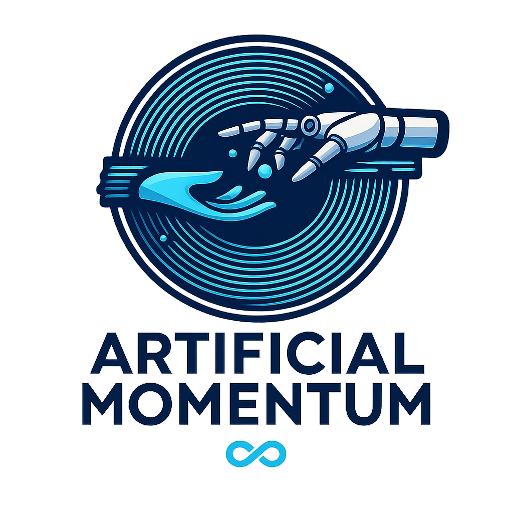

Day 5 — Anchoring Your Rhythm — The 5-Day Capstone
You’ve felt what happens when you stop fighting and start listening.

🧭 Cycle Lens
- Pre-menstrual → early bleed transition = reset moment.
- Ladies — that feeling of willing your period to start? That’s your body asking for closure and reset.
💧 Quick Win
Choose one tiny ritual to repeat every morning for 7 days (e.g., water + electrolytes before coffee). Consistency beats intensity.
🧪 Signals to Notice
- What shifted this week — steadier energy, fewer crashes, clearer signals?
- Which day’s quick win helped most? That’s your anchor habit.
- You’re not broken — you mapped your rhythm.
🧰 Support Moves
- Keep the anchor: hydration + protein early.
- Keep the pace: lighter days aren’t “less” — they’re strategic.
- Keep the grace: speak to yourself like your best friend.
📝 Reflection Prompt
What one rhythm will I carry into the next month? What support do I need to protect it?
🧠 Why (mini-physiology)
Lower load + consistent rituals restore capacity. Your system loves rhythm more than intensity.
🪄 Next Step: Diana Air 6-Week Blueprint
You’ve just reset in 5 days. Imagine 6 full weeks — every phase mapped, supported, and lived. The Blueprint gives you structure, rhythm sheets, and live coaching support to make this your new normal.